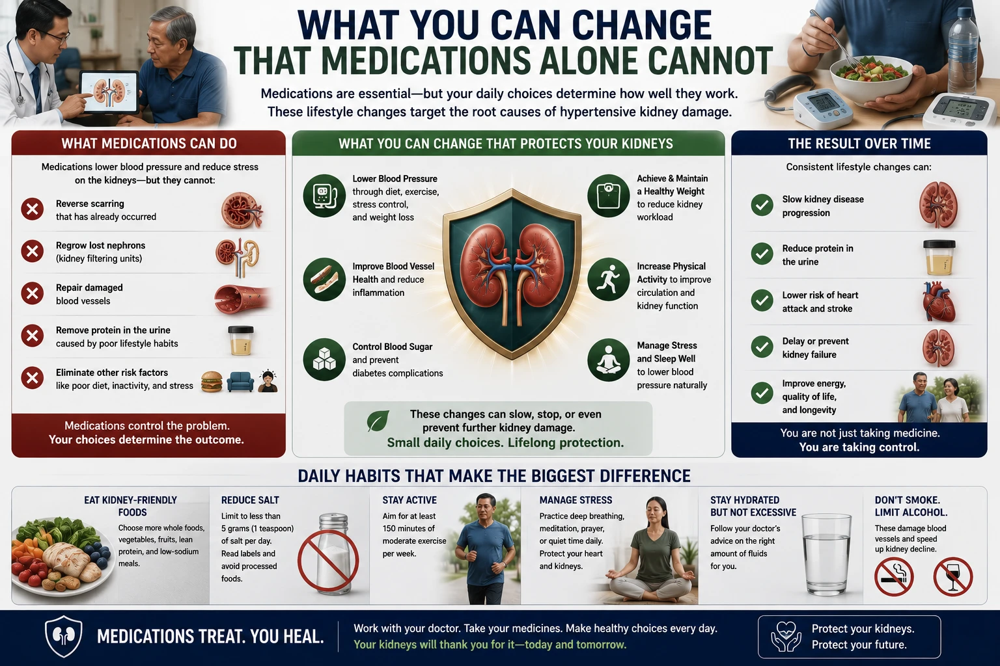
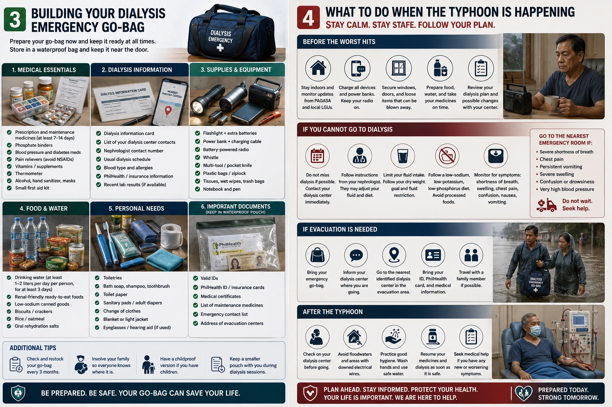
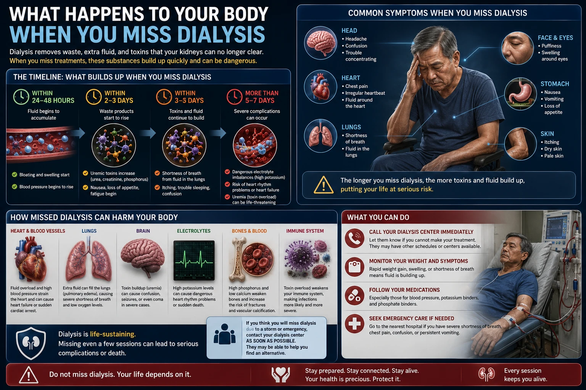
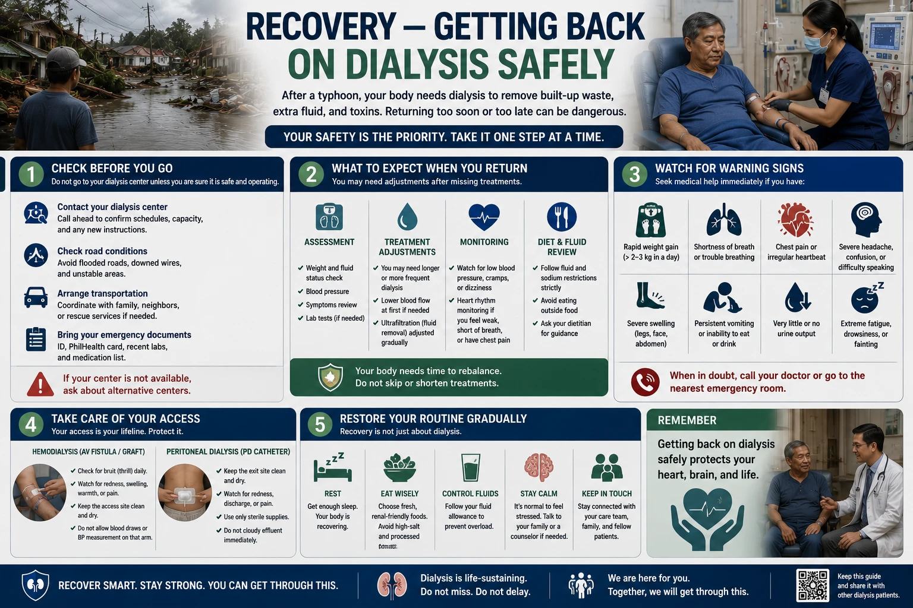

| Typhoon & Disaster Preparedness for Dialysis Patients · williamriveromd.com | W.G.M. Rivero MD · FPCP · DPSN · PRC 0105184 · 2026 |
|
Emergency Preparedness · Dialysis Patients
Typhoon & Disaster Preparedness
for Dialysis Philippine typhoon season (June–November) poses life-threatening risks for dialysis patients. Covers: missed sessions, emergency protocols, go-bag essentials, fluid management, and safe evacuation.
|
⛑️
W.G.M. Rivero MD
FPCP · DPSN Nephrologist
williamriveromd.com
|
20+ Typhoons/Year in PH |
48 hrs Max Safe Missed HD |
Go-Bag Always Ready |
Call First Dial Center |
| PAGASA Signal | Wind Speed | Action Required |
|---|---|---|
| Signal 1 | 30–60 km/h | Prepare go-bag; confirm next dialysis schedule; stock 2-day emergency food |
| Signal 2 | 61–120 km/h | Call dialysis center now — confirm if open; fill fluid allowance bottles; charge phone |
| Signal 3 | 121–170 km/h | Go to pre-arranged evacuation point if center is closed; do NOT attempt travel in flood |
| Signal 4 | 171–220 km/h | Shelter in place; contact Red Cross or DSWD for emergency dialysis; restrict fluids strictly |
| Signal 5 | >220 km/h | Catastrophic — follow emergency broadcast; restrict all fluid and potassium intake |
Do NOT skip meals to compensate. Instead: restrict fluids to absolute minimum, avoid ALL high-potassium foods (buko water, banana, kamote tops), and seek emergency dialysis at the nearest open facility.
| For educational use only. This guide does not replace your nephrologist's personalized emergency plan. Always carry your dialysis center's emergency contact. References: PAGASA Public Storm Warning Signals · Philippine NDRRMC Emergency Guidelines · KDIGO Disaster Preparedness Resources 2024. | williamriveromd.com Page 1 of 8 · Typhoon Preparedness · Dialysis |
| Typhoon & Disaster Preparedness for Dialysis Patients | W.G.M. Rivero MD · FPCP · DPSN · williamriveromd.com · 2026 |

| For educational use only · Not a substitute for individualized medical advice · williamriveromd.com | williamriveromd.com Page 2 |
Dialysis Go-Bag · During the Typhoon Be ready before the storm — not during it |
Page 3 of 8 · williamriveromd.com |
|
💊 Medical
✓ 3-day supply of all medications (labeled by dose/time)
✓ Copy of prescription and lab results (most recent)
✓ Emergency contact: dialysis center + nephrologist number
✓ Dialysis schedule card (next 3 sessions with dates/times)
✓ Medical alert bracelet or card stating "Dialysis Patient"
✓ BP monitor (manual preferred — no batteries needed)
✓ AV fistula care: sterile gauze, medical tape, gloves (in case of bleeding)
✓ PD patients: 2 extra bags of PD solution + transfer set + cap
|
🍚 Food & Fluid
✓ 500 mL water (within your daily fluid allowance)
✓ Low-potassium snacks: 1 cup cassava, plain crackers (low-sodium), hard-boiled egg
✗ AVOID packing: buko water, banana chips, dried fruits, nuts
🎒 Essentials
✓ Fully charged power bank + phone charger
✓ Small flashlight + batteries
✓ Cash (₱500 minimum — ATMs may be offline)
✓ Extra dry clothing in waterproof bag
✓ Copy of PhilHealth ID and dialysis center membership card
|
If power is out for >4 hours, keep your PD solution at room temperature — do NOT use solution that has been exposed to extreme heat or flood water. Use backup manual exchanges if cycler is unavailable.
| For educational use only. Medications, go-bag contents, and emergency plans should be reviewed with your nephrologist before typhoon season. Keep your go-bag packed June–November at all times. | williamriveromd.com Page 3 of 8 |
| Typhoon & Disaster Preparedness for Dialysis Patients | W.G.M. Rivero MD · FPCP · DPSN · williamriveromd.com · 2026 |

| For educational use only · Not a substitute for individualized medical advice · williamriveromd.com | williamriveromd.com Page 4 |
Missed Dialysis Protocol · Emergency Diet Restrictions What to do when you cannot get to your center |
Page 5 of 8 · williamriveromd.com |
| Hours Missed | Risk Level | Actions |
|---|---|---|
| 0–12 hrs | Low | Restrict fluids to 500 mL total; avoid all high-K+ foods; contact center for rescheduling |
| 12–24 hrs | Moderate | Same as above + check for symptoms: swelling, shortness of breath, palpitations → ER |
| 24–36 hrs | High | Seek emergency dialysis at any open facility; if symptomatic → ER immediately |
| 36–48 hrs | Very High | Medical emergency — any functioning hospital with hemodialysis |
| >48 hrs | Critical | Life-threatening — emergency services (911 / Red Cross: 143) |
Chest pain or pressure · Severe difficulty breathing · Confusion or extreme weakness · Puffy face/severe leg swelling · Urine output suddenly stopping
|
💧 Fluids
Limit to 500 mL/day total (includes soup, ice, medicine water). No buko water, no juices, no softdrinks. Signs of fluid overload: shortness of breath, inability to lie flat. |
⚡ Potassium
Avoid ALL: banana, saging na saba, kamote tops, avocado, buko water, monggo, kalabasa. SAFE: rice, cassava, kamote (small amount), boiled sayote/upo. |
🔬 Phosphorus & Protein
Minimize protein portions. No processed food. No cola drinks (phosphoric acid). Small portion of egg or tofu only. |
| Organization | Contact | Service |
|---|---|---|
| Red Cross Philippines | 143 | Emergency medical transport |
| NDRRMC Hotline | 911 / 02-8911-5061 | National disaster coordination |
| DOH Emergency | 1555 | Health emergencies |
| PhilHealth | 02-8441-7444 | Coverage during emergencies |
| For educational use only. These protocols supplement — but do not replace — your nephrologist's individual guidance. The 48-hour threshold is a general guideline; some patients may decompensate faster depending on residual kidney function and fluid status. | williamriveromd.com Page 5 of 8 |
| Typhoon & Disaster Preparedness for Dialysis Patients | W.G.M. Rivero MD · FPCP · DPSN · williamriveromd.com · 2026 |

| For educational use only · Not a substitute for individualized medical advice · williamriveromd.com | williamriveromd.com Page 6 |
Emergency Disconnection · PD Patients · Post-Typhoon Recovery Fistula emergencies · PD-specific guidance · Returning to normal care |
Page 7 of 8 · williamriveromd.com |
①
Apply Pressure
APPLY FIRM PRESSURE immediately with thumb or any clean cloth — do not remove
|
②
Hold 10–15 min
Maintain pressure for at least 10–15 minutes without checking
|
③
No Tourniquet
Do NOT apply a tourniquet under any circumstances
|
④
Call for Help
Call someone to help — do not drive yourself to the hospital
|
⑤
ER if Persistent
Go to ER or call emergency services if bleeding does not stop after 15 minutes
|
A dislodged fistula needle can cause life-threatening blood loss in minutes. Practice this response with your family BEFORE an emergency occurs.
|
Manual Exchanges if Cycler Fails
Use your manual exchange training — 4 exchanges of 2L per day minimum; set phone alarms for exchange times. Practice manual exchanges before typhoon season.
|
Flood Water Contamination
If your PD exit site or bags were exposed to flood water — do NOT use contaminated solution; contact your PD nurse immediately for guidance.
|
Cloudy Effluent
Cloudy effluent during/after typhoon may indicate peritonitis — culture effluent and start empiric antibiotics per your center's protocol; go to ER.
|
| For emergencies: Red Cross 143 · NDRRMC 911 · DOH 1555 · For educational use only · williamriveromd.com · 2026 | williamriveromd.com Page 7 of 8 |
| Typhoon & Disaster Preparedness for Dialysis Patients | W.G.M. Rivero MD · FPCP · DPSN · williamriveromd.com · 2026 |

| For educational use only · Not a substitute for individualized medical advice · williamriveromd.com | williamriveromd.com Page 8 |